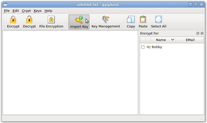
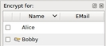

Cómo importar llaves públicas
Hay
tres pasos para importar llaves públicas Se supone que Bobby quiere importar la llave
de Alice, de manera que pueda cifrar mensajes para ella.
Cuando
Bobby quiere importar una llave desde la caja del editor de texto o desde el portapapeles,
primero tiene que copiar la llave en él.
PASO 1: Abrir el menú importar llave
Primero, Bobby abre el menú 'Importar llave' a través del botón de la barra de herramientas.

PASO 2: Escoger llaves
Segundo, hacer la selección adecuada Si él quiere importar una llave desde la caja del editor de texto, tiene antes que poner la llave en esa caja. Sólo si quiere importar llaves desde un archivo tiene que ir al próximo paso, de lo contario ya está todo hecho.

PASO 3: Escoger archivo
Ahora tiene que escoger la llave a importar. Después de hacerlo, la llave importada aparece en el listado de llaves.
